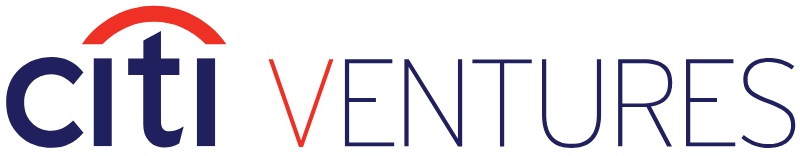

Citi Ventures D10x Accelerator
Bringing startup-speed research, design, and prototyping into one of the world’s largest banks — helping Citi’s internal founders turn early ideas into validated, launch-ready digital products.
Overview
Citi Ventures is the bank’s engine for experimenting with new products and services. Its D10X incubator trains employees to act as “intrapreneurs” — internal founders who lead small startup teams inside the company.
At Code and Theory, I partnered with these founder teams over a multi-year engagement. I led user research and drove design across several project streams, with a focus on mobile-first services built natively, so that each concept could inform both near-term updates and the longer-term direction of Citi’s customer apps.
The Challenge
Innovating inside a large, regulated institution
Big banks are built for stability, not speed. Citi needed a repeatable way for internal teams to generate ideas, test them quickly with real customers, and kill or advance them on evidence rather than opinion.
The program also had to scale: dozens of concurrent teams, across regions, each producing learning that the wider organization could reuse.
My Approach
Design thinking meets Lean Startup
Frame the problem
Worked with founders to sharpen ideas into testable hypotheses about customer needs and product–market fit.
Validate with users
Led qualitative research to confirm the problem was real before investing in a solution, then tested proposed solutions with customers.
Prototype fast
Drove design of rapid prototypes, from clickable flows to native mobile builds, so teams could learn from real behavior early.
Measure and decide
Defined success metrics for each concept, helping teams decide on evidence whether to pivot, persevere, or stop.
Share what we learned
Presented findings to Citi staff monthly, exposing knowledge gaps and opportunities across the full portfolio of ventures.
Project Streams
The engagement ran as parallel streams, each moving concepts from early idea toward market.
Ideation & Product–Market Fit
Generating new product and service concepts with founders and assessing which had a credible market.
Problem & Solution Validation
Customer interviews and testing to validate the need first, then the proposed solution.
D10X Mobile Product Concepts
A series of native mobile service concepts used to shape short- and long-term plans for Citi’s customer apps.
Prototyping & Development
Web and native app prototypes, plus data-driven personalization for more complex products.
Roadmap & Go-to-Market
Measurement strategy, product roadmaps, and launch planning in partnership with Citi’s technology teams.
Program Impact
Across the engagement, the program reshaped how Citi Ventures pursues and demonstrates innovation, and drew recognition from the bank’s senior leadership.
Capabilities
User Research · Product Strategy · Product Design · Rapid Prototyping · Native Mobile · Lean Startup · Design Thinking · Measurement Strategy · Roadmapping · Go-to-Market
Recognition
Products from the Citi innovation program
- 2021Webby Awards Honoree — Worthi by Citi
- 2021Fast Company World Changing Ideas — City Builder by Citi
- 2020Fast Company Best Urban Design — City Builder by Citi
- 2019BAI Global Innovation Awards